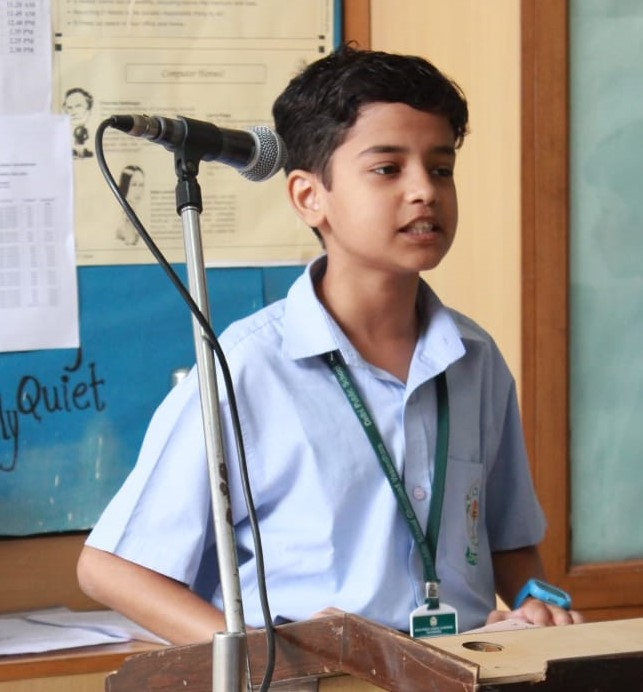

Hello! I'm Advik Tyagi.
I am a class 8th student passionate about technology and web development. This website was created as part of my holiday homework, and it showcases my first steps into the exciting world of web design and coding.
I am at the initial stages of my learning journey and there is still a long way to go. Each line of code teaches me something new and takes me one step closer to becoming more proficient. Here's a little about what I've learned so far:
This website is a showcase of what I've learned so far. It includes a few sections where I display my projects, share my learning experiences, and explore new technologies. Through this platform, I hope to connect with other students and teachers and share our mutual interests in technology and programming.
While I am just starting out and still have much to learn, I am committed to expanding my knowledge in web development and other programming languages. My goal is to keep improving my skills and eventually take on more complex projects. I dream of becoming a professional web developer one day, and this website is just the beginning of that journey.
If you have any questions or would like to discuss potential projects, please do not hesitate to contact me at advik.tyagi@gmail.com.
Thank you for visiting my site! Feel free to explore my projects and leave feedback. I am excited about the opportunity to learn from this experience and improve with every project I undertake.